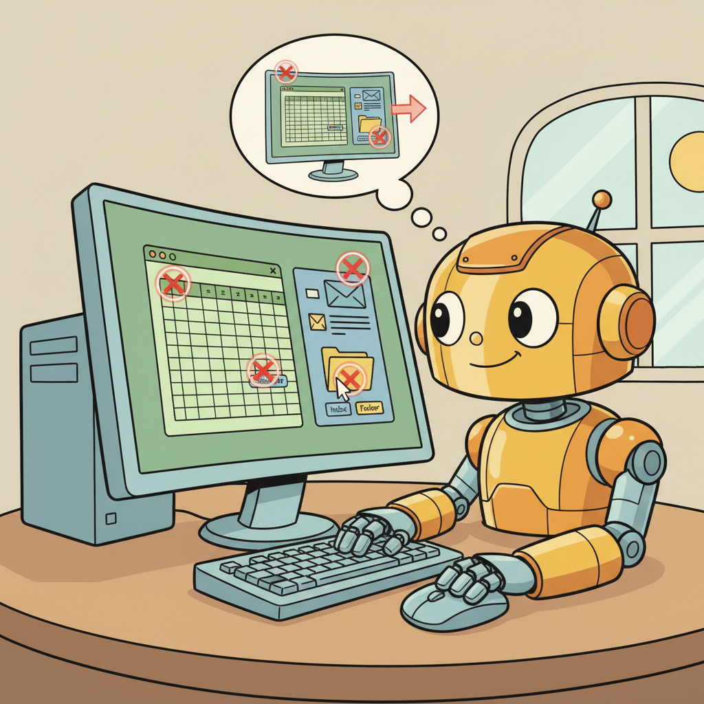

Prerequisites
This section builds on agent foundations from Chapter 22, tool use from Chapter 23, and multi-agent patterns from Chapter 24.

1. Computer Use: Beyond the Browser Advanced
Computer use agents interact with desktop applications through the same interface a human user would: they see the screen (via screenshots), move the mouse, click elements, and type on the keyboard. This is a fundamentally different approach from API-based tool use. Instead of calling structured functions, the agent reasons about visual information and generates low-level GUI interactions. Anthropic's Computer Use capability, released in October 2024, was the first commercially available computer use agent from a major provider.
The architecture is conceptually simple but technically challenging. At each step, the agent receives a screenshot of the current screen state. It uses vision capabilities to understand what is on the screen: which application is active, what buttons and menus are visible, where text fields are located, and what the current state of the workflow is. Based on this understanding, it generates an action (move mouse to coordinates, click, type text, press key combination) that the automation framework executes. The screen is then captured again, and the cycle repeats.
Computer use agents excel in scenarios where no API exists: interacting with legacy desktop applications, automating workflows across multiple applications (copy data from a spreadsheet into an email client into a CRM), and performing tasks that require visual reasoning (reading charts, interpreting dashboards, navigating complex UIs). The OSWorld benchmark provides standardized evaluation across Ubuntu desktop environments, testing tasks like file management, application configuration, and multi-application workflows.
Computer use agents are slow and expensive compared to API-based agents. Each action requires a screenshot capture, a vision model inference, and a GUI interaction, typically taking 3 to 10 seconds per step. A task that takes 20 steps costs significantly more in API calls than the equivalent task done through function calling. Use computer use agents only when no API alternative exists. If an API is available, it will always be faster, cheaper, and more reliable than GUI automation.
Computer Use Architecture
This snippet sets up the Anthropic computer-use agent that can observe and interact with a full desktop environment.
import anthropic
import base64
client = anthropic.Anthropic()
def computer_use_loop(task: str, max_steps: int = 30):
messages = [{"role": "user", "content": task}]
for step in range(max_steps):
# Capture current screen state
screenshot = capture_screenshot()
screenshot_b64 = base64.standard_b64encode(screenshot).decode()
response = client.messages.create(
model="claude-sonnet-4-20250514",
max_tokens=4096,
system="You are a computer use agent. Complete the task by "
"interacting with the desktop through mouse and keyboard.",
messages=messages + [{
"role": "user",
"content": [{
"type": "image",
"source": {
"type": "base64",
"media_type": "image/png",
"data": screenshot_b64,
},
}],
}],
tools=[{
"type": "computer_20250124",
"name": "computer",
"display_width_px": 1920,
"display_height_px": 1080,
}],
)
# Execute the computer action
for block in response.content:
if block.type == "tool_use" and block.name == "computer":
execute_computer_action(block.input)
if response.stop_reason == "end_turn":
return response.content[-1].text # Task complete
return "Max steps reached without completing the task"
2. Practical Applications Advanced
The most practical applications of computer use agents involve repetitive workflows across desktop applications that resist automation through other means. Data entry between systems that lack integrations, software testing through the GUI, automated report generation from dashboard tools, and IT support tasks like configuring software settings are all strong use cases. The key criterion is: if a human can do it by looking at the screen and using the mouse and keyboard, a computer use agent can potentially do it too.
Safety is paramount for computer use agents because they have access to everything on the screen. A computer use agent can potentially read sensitive information, make purchases, send messages, or modify system settings. Production deployments must run in isolated virtual machines with limited access, monitor all agent actions through screen recording, and implement hard limits on which applications and actions the agent can access.
API-based agents (Chapter 23): Always prefer this when an API exists. Fastest, cheapest, most reliable. Use for any system with a programmatic interface.
Browser agents (Section 25.2): Use when the target system is web-based but lacks an API. Faster than computer use because the accessibility tree provides structured page data.
Computer use agents: Last resort when the target is a desktop application with no API and no web interface. Slowest, most expensive, and most fragile, but uniquely capable for legacy desktop automation.
In practice, many workflows benefit from a hybrid approach: use API calls where available, fall back to browser automation for web-only features, and reserve computer use for the few steps that require desktop interaction.
Never run a computer use agent on a machine with access to sensitive credentials, financial accounts, or production systems without strict sandboxing. The agent sees everything on the screen, including password fields, API keys in terminal windows, and email contents. Always use dedicated virtual machines with minimal access for computer use agents, and review screen recordings of agent sessions for security audits.
Exercises
Compare computer use agents with browser agents. What additional capabilities do computer use agents have, and what new challenges do they introduce?
Answer Sketch
Computer use agents interact with the full desktop environment (native apps, file managers, terminals) rather than just web browsers. Additional capabilities: running desktop applications, managing files, interacting with OS dialogs. New challenges: visual grounding (understanding screenshots of arbitrary UIs), larger action spaces, safety risks (access to the full system), and slower feedback loops (screenshots instead of DOM).
Explain how a computer use agent interprets a screenshot to decide its next action. What vision capabilities are required, and what are the failure modes?
Answer Sketch
The agent receives a screenshot and uses vision-language model capabilities to identify UI elements (buttons, text fields, menus). It determines coordinates for clicking or typing. Required capabilities: OCR (reading text in images), element detection (identifying clickable areas), spatial reasoning (understanding layout). Failure modes: misidentifying UI elements, clicking the wrong coordinates, failing to detect pop-ups or overlays, and struggling with non-standard UI designs.
Write a Docker Compose configuration for a sandboxed computer use environment. Include a virtual display (Xvfb), a VNC server for monitoring, and resource limits (CPU, memory, network).
Answer Sketch
Use an Ubuntu base image with Xvfb for headless display and x11vnc for remote viewing. Set cpus: '1.0', mem_limit: 2g, and restrict network access to an allowlist. Map the VNC port for monitoring. Install only the applications the agent needs. This provides a safe environment where the agent cannot affect the host system.
Design an action space for a computer use agent that balances expressiveness with safety. What primitive actions should be available, and which actions should be restricted or require approval?
Answer Sketch
Primitives: mouse click (left/right), mouse move, keyboard type, keyboard shortcut, screenshot, scroll, wait. Restricted actions: file deletion (require approval), network requests to unknown hosts (block), system settings changes (block), installing software (require approval). The action space should be minimal; avoid giving the agent unnecessary capabilities that increase the attack surface.
How would you evaluate a computer use agent on a task like 'Open a spreadsheet, add a formula to column C that sums columns A and B, and save the file'? Define the success criteria and intermediate checkpoints.
Answer Sketch
Success criteria: the file is saved and column C contains the correct SUM formula. Intermediate checkpoints: (1) the spreadsheet application is open, (2) the correct file is loaded, (3) the cursor is in the correct cell, (4) the formula is entered correctly, (5) the file is saved. Each checkpoint can be verified by taking a screenshot and checking for expected visual elements, or by inspecting the file contents after the task.
What Comes Next
In the next section, Research & Data Analysis Agents, we continue exploring the concepts in this chapter.